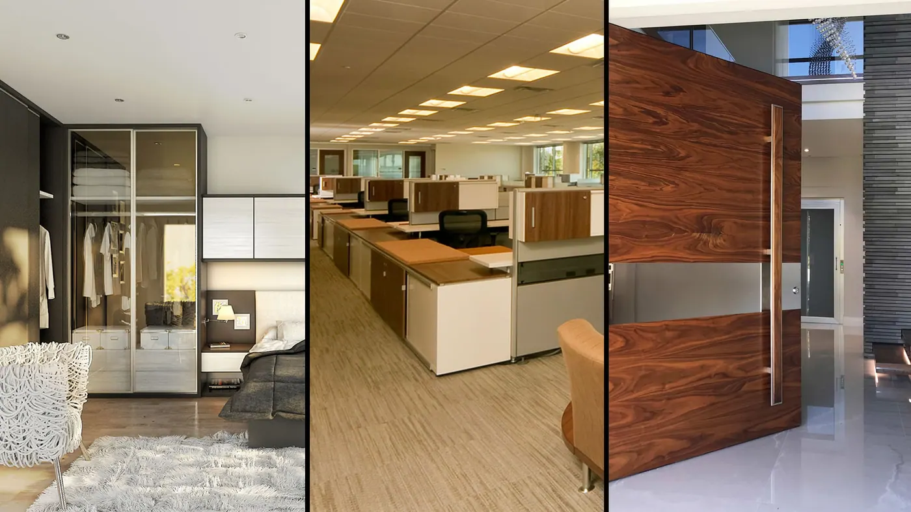
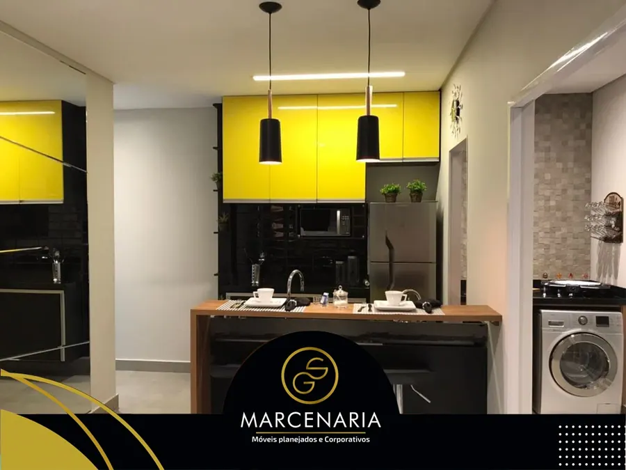
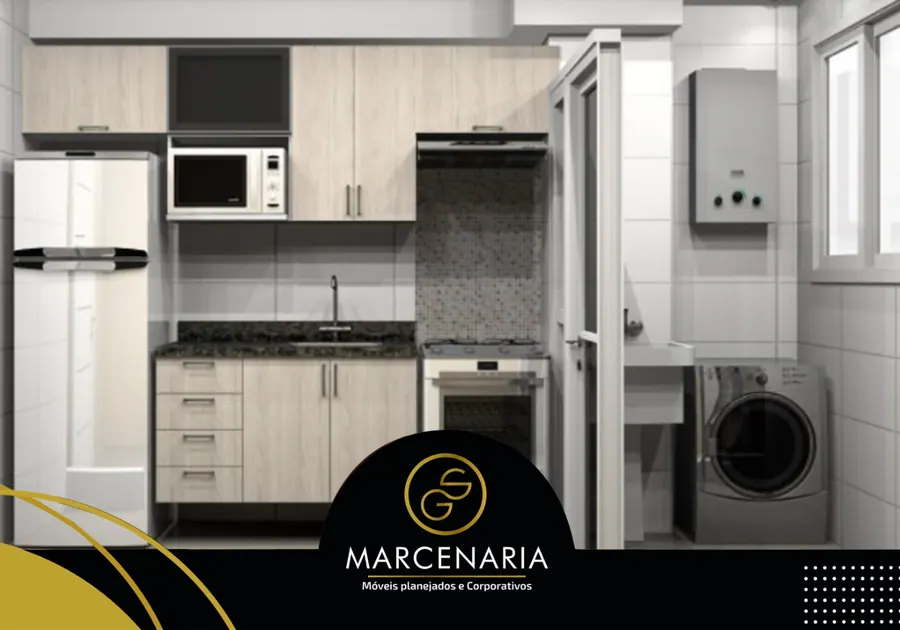
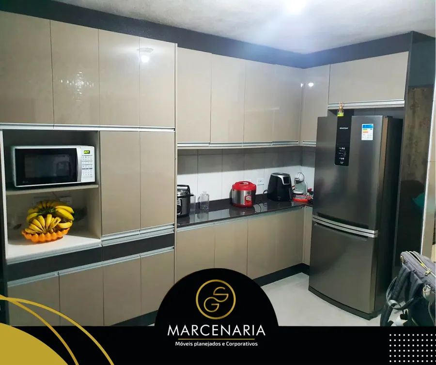
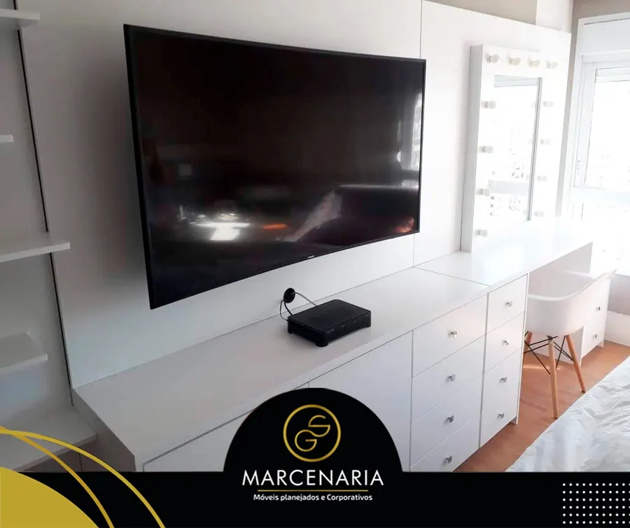
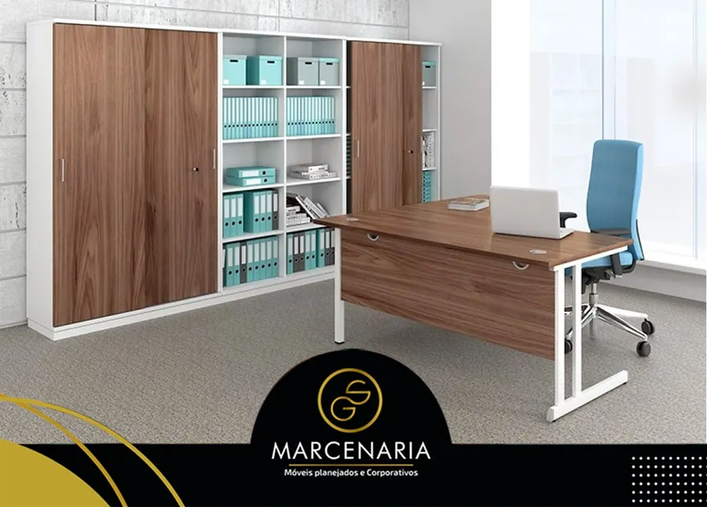
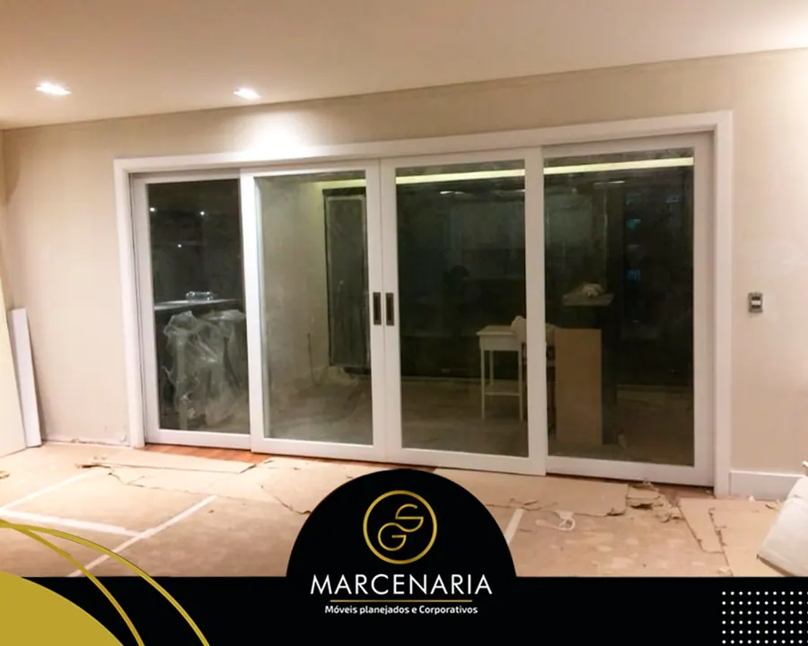
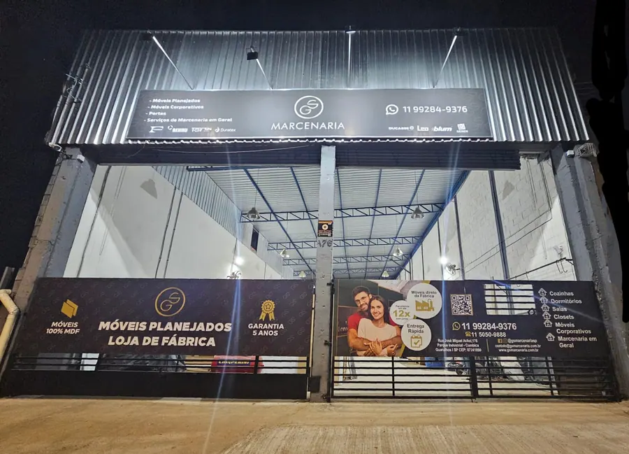

Fabricamos e instalamos portas e móveis planejados para qualquer tipo de ambiente. Nossa história se deve ao fato de trabalharmos apenas com os melhores marceneiros em São Paulo.

Trabalhos realizados
A GS Marcenaria é especializada em fabricar cozinha planejada e móveis planejados para qualquer tipo de ambiente, conforme projeto de cada cliente, construindo com comprometimento e qualidade.







Portfólio completo por categoria: área gourmet, banheiros, cozinhas, dormitórios, empresas, escritórios, lavanderias, salas e portas sob medida.
Ambientes
Formas de pagamento
Todo trabalho possui garantia, e disponibilizamos nota fiscal aos nossos clientes para garantir transparência e segurança.
Nosso compromisso
Missão: oferecer o melhor em móvel planejado e porta personalizada para estabelecimentos comerciais e residências, empenhando-se sempre em atender às necessidades de nossos clientes, com qualidade, prazo e preços adequados.
Visão: ser uma marcenaria com performance reconhecidamente sólida e confiável, destacando-se pelo uso de tecnologias inovadoras e por equipes capacitadas, comprometidas com a qualidade total e a satisfação dos clientes.
Ética: adotamos padrões éticos e morais e observamos as normas e leis em vigor, visando garantir nossa credibilidade no mercado.
Contato
Diga qual ambiente você quer planejar e a medida aproximada. Respondemos com o projeto e o orçamento.